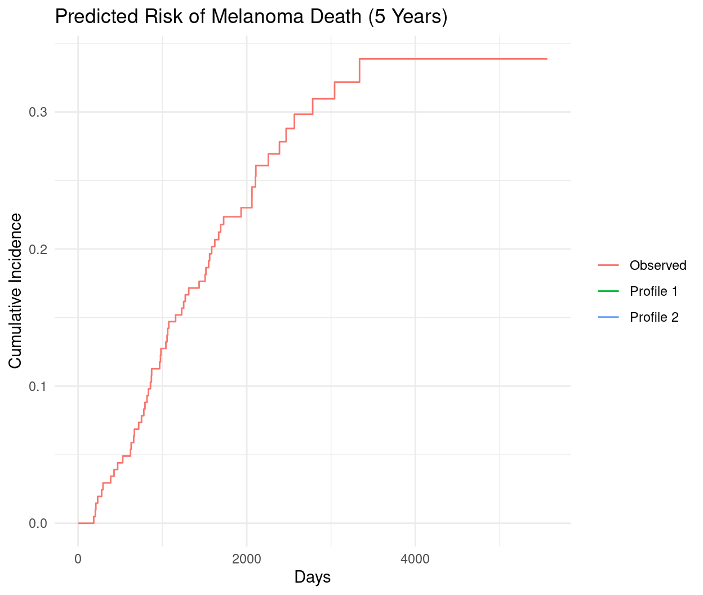

Subdistribution Hazard Regression (also known as the Fine–Gray model) is a statistical method for analyzing competing risks data—situations where an individual is at risk of experiencing more than one type of event, and the occurrence of one event precludes the others.
It was introduced by Fine and Gray (1999) to directly model the effect of covariates on the cumulative incidence function (CIF), which represents the absolute risk (or probability) of experiencing a specific event by time t, in the presence of competing events.
In competing risks:
Cause-specific hazard (CSH) models (e.g., crr() or FGR(..., model = "CS")) model the instantaneous rate of an event assuming competing events are censored.
Answers: “What factors influence the biological mechanism or etiology of this event?”
However, CSH does not directly translate to the absolute risk (CIF), because a covariate may increase the hazard of the event of interest but decrease its cumulative incidence if it strongly increases the risk of a competing event.
The Fine–Gray model addresses this by modeling the subdistribution hazard, which is constructed so that proportional hazards on this scale implies proportional CIFs.
Overview
For an event of interest (e.g., cause 1), the subdistribution hazard is defined as:
\[
\lambda_1^{SD}(t \mid \mathbf{x}) = \lim_{\Delta t \to 0} \frac{\mathbb{P}(t \leq T \leq t + \Delta t, \text{cause} = 1 \mid T > t \text{ or } (T \leq t \text{ and cause} \neq 1), \mathbf{x})}{\Delta t}
\]
In words:
It’s the instantaneous rate of failing from cause 1 at time t, among those who have not yet experienced cause 1—including individuals who already failed from a competing cause.
This is not a true hazard (since the risk set includes people who are no longer at risk), but a “pseudo-hazard” designed to link directly to the CIF.
Under the Fine–Gray proportional subdistribution hazards model:
n the period 1962-77, 205 patients with malignant melanoma (cancer of the skin) had a radical operation performed at Odense University Hospital, Denmark. All patients were followed until the end of 1977 by which time 134 were still alive while 71 had died (of out whom 57 had died from cancer and 14 from other causes).
time: time in days from operation
status: a numeric with values 0=censored 1=death.malignant.melanoma 2=death.other.causes
event: a factor with levels censored death.malignant.melanoma death.other.causes
invasion: a factor with levels level.0, level.1, level.2
ici: inflammatory cell infiltration (IFI): 0, 1, 2 or 3
Event of interest: death from melanoma (status == 1)
Competing event: death from other causes (status == 2)
Non-Parametric CIF Estimation (Baseline)
Code
# Recode status for clarityMelanoma <- Melanoma %>%mutate(event =case_when( status ==1~"Melanoma death", status ==2~"Other death", status ==0~"Censored" ))# Non-parametric CIF using prodlimfit_prod <-prodlim(Hist(time, event) ~1, data = Melanoma)summary(fit_prod)
time cause n.risk n.event n.lost cuminc se.cuminc lower upper
1 10 Censored 205 0 0 0.00000 0.00000 0.00000 0.0000
2 1513 Censored 155 0 0 0.02439 0.01077 0.00327 0.0455
3 2006 Censored 102 0 0 0.22927 0.02936 0.17172 0.2868
4 3042 Censored 52 0 0 0.42439 0.03452 0.35673 0.4920
5 5565 Censored 1 1 0 0.65366 NaN NaN NaN
6 10 Melanoma death 205 0 0 0.00000 0.00000 0.00000 0.0000
7 1513 Melanoma death 155 0 0 0.18049 0.02686 0.12784 0.2331
8 2006 Melanoma death 102 0 0 0.22439 0.02914 0.16728 0.2815
9 3042 Melanoma death 52 0 0 0.26829 0.03095 0.20764 0.3289
10 5565 Melanoma death 1 0 0 0.27805 NaN NaN NaN
11 10 Other death 205 1 0 0.00488 0.00487 0.00000 0.0144
12 1513 Other death 155 0 0 0.03902 0.01353 0.01252 0.0655
13 2006 Other death 102 0 0 0.04878 0.01504 0.01929 0.0783
14 3042 Other death 52 0 0 0.05366 0.01574 0.02281 0.0845
15 5565 Other death 1 0 0 0.06829 NaN NaN NaN
# Prepare dataftime <- Melanoma$time # failure/censoring timefstatus <- Melanoma$status # 0 = censored, 1 = melanoma, 2 = othercov <- Melanoma %>%select(age, sex, thick, ulcer) %>%# keep only the covariates you wantmutate(sex =as.numeric(sex), # 0/1 → numeric (already is, but be safe)ulcer =as.numeric(ulcer) )## any missing values?any(is.na(ftime)) # FALSE
[1] FALSE
Code
any(is.na(fstatus)) # FALSE
[1] FALSE
Code
any(is.na(cov)) # FALSE → if TRUE you must remove/impute rows
[1] FALSE
Code
# Fit Fine-Gray model for melanoma death (failcode = 1)fit_crr <-crr(ftime = ftime, fstatus = fstatus,cov1 = cov,failcode =1, # cause of interestcencode =0) # censoring codesummary(fit_crr)
# Cause-specific Cox for melanoma deathfit_csc1 <-coxph(Surv(time, status ==1) ~ age + sex + thick + ulcer, data = Melanoma)# Cause-specific Cox for other deathfit_csc2 <-coxph(Surv(time, status ==2) ~ age + sex + thick + ulcer, data = Melanoma)# Combine into CSC objectcsc <-CSC(list(melanoma =Hist(time, status) ~ age + sex + thick + ulcer,other =Hist(time, status) ~ age + sex + thick + ulcer ),data = Melanoma)coef(csc)
$`Cause 1`
age sexMale thick ulcerpresent
0.01219844 0.43281709 0.10894525 1.16447890
$`Cause 2`
age sexMale thick ulcerpresent
0.07255223 0.35801080 0.04958006 0.10936653
observation age sex thick ulcer times absRisk
<int> <num> <fctr> <num> <fctr> <num> <num>
1: 1 50 Male 1 not present 1825 0.120
2: 2 50 Male 6 present 1825 0.503
Plot cumulative incidence for the two profiles
Code
# Build plot_df plot_df <-bind_rows( Melanoma %>%mutate(status_factor =factor( status,levels =c(0, 1, 2),labels =c("censored", "melanoma", "other") ),profile ="Observed" ), new_patients %>%mutate(time =0,status =0, # keep original numeric if you want, but not usedstatus_factor =factor("censored",levels =c("censored", "melanoma", "other") ),profile =paste("Profile", 1:2) ))# Cumulative incidencecif <-cuminc(Surv(time, status_factor) ~ profile,data = plot_df)# Plotggcuminc(cif, outcome ="melanoma") +labs(title ="Predicted Risk of Melanoma Death (5 Years)",x ="Days", y ="Cumulative Incidence" ) +theme_minimal()

Summary and Conclusion
Fine and Gray’s subdistribution hazard model is a powerful tool for analyzing competing risks data, allowing for direct modeling of cumulative incidence functions. By using R packages like cmprsk, tidycmprsk, and riskRegression, researchers can effectively estimate and interpret absolute risks in the presence of competing events. This approach is particularly useful for clinical decision-making and public health planning, where understanding the absolute risk of specific outcomes is crucial. This tutorial has provided a comprehensive overview of the Fine-Gray model, its implementation in R, and practical examples using the Melanoma dataset.
Resources
Fine JP, Gray RJ (1999). A Proportional Hazards Model for the Subdistribution of a Competing Risk. JASA.